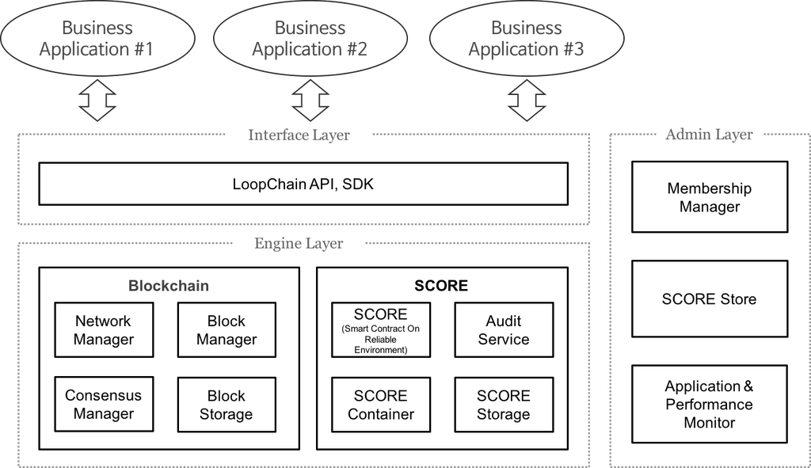

loopchain SCORE의 가장 큰 특징은 개발 친화적 언어를 통해 자유롭게 개발환경을 구성할 수 있다는 점입니다. 대표적인 블록체인 기반 스마트 컨트랙트 플랫폼인 이더리움의 경우 특수한 가상머신 EVM(Ethereum Virtual Machine)에서 사용 가능한 언어로만 스마트 컨트랙트를 작성할 수 있습니다. 즉 Solidty, Serpent, LLL을 통해서 스마트 컨트랙트를 개발을 해야하고 데이터 접근 및 저장 또한 EVM 내부 변수를 통해서만 저장할 수 있습니다.
loopchain SCORE는 합의엔진과 의존성을 최대한 떨어뜨린 별도의 모듈로 개발되었습니다. 합의 엔진과 SCORE는 내부 GRPC로 구현된 인터페이스를 통하여 통신을 하기 때문에 인터페이스만 맞으면 어떠한 언어로도 구현이 가능하나 현재는 파이썬 구현체만 허용하고 있습니다. 데이터 베이스 또한 자유롭게 사용할 수 있죠. 다만 이더리움 처럼 변수의 모든 데이터가 저장되지는 않고 데이터베이스에 직접 읽고 쓰고 한 결과만 저장됩니다.